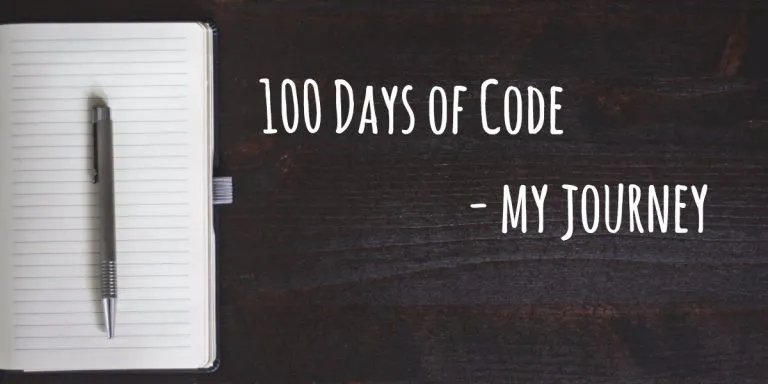

Day 97 : Finally, after months of works, I successfully completed "Data Science Specialization" course @Coursera offered by John Hopkins University.
— Binod Jung Bogati (@bjungbogati) June 24, 2018
Thanks to everyone who supported me, especially to @diwastha who helped me in this journey.
#100DaysOfCode #DataScience #rstats pic.twitter.com/KrjAJaOpVy

100 Days of Code is challenge where you’ll publicly commit yourself to code. We’ve a rule that you’ll code at least an hour a day for next 100 Days and share your progress at Twitter.
At first, I started with DataCamp. Previously, I had completed Python for Data Science track which is great course indeed. And, I also started R programming track.
One day, a good friend of mine (Diwash Shrestha) recommended me Coursera’s R programming course. I examined the course, which I found useful and went to try it out
I’m thankful that I got scholarships to complete whole Data Science Specialization Course. See my certification link here.
Coursera’s Data Science Specialization is an online course offered by John Hopkins University. It consists of 9 courses and 1 capstone project with R Programming. The course claims to cover the concept of entire Data Science pipeline.
Looking back, the past 100 Days were exciting. Indeed, I’d been through various challenges . However, with good amount of dedication and practices, I solved them. And, I’m happy about it.
And, that was part of my story.
To all my readers, who wants to pursue their career (in Data Science or any other fields). I want to share my experiences with you
Get started : To get started means begin from now. Choose wisely which career path you want to follow.
Learn by doing: Pet projects are kick-starter for career. Documenting your project helps you because you may need for future reference.
Attend events: Check for near by meetups, workshops, or similar events. You may get help from seniors.
Peer-to-Peer learning: Encourage people who might be interested learning with you. Have some fun, support and competitions.
Learn to share: Sharing your knowledge is great way of learning. You’ll learn more by sharing your work.
Make it consistent: Apply constant efforts to learn. Gradually, you’ll start learning better. Finally, I’d like to conclude with thanks to all my supporters who helped me in this journey.
If you want to read what motivated me to take this challenge, you may read from my Day 1 post – Starting 100 Days of Code.
#100DaysOfCode : It’s not about daily progress. It’s about progress daily.
Well, if you’re still here and interested to hear from me. Leave the comment down below. I might be a good guide for you.